This playlist is full of songs that will pull on your heartstings. It has all the highs and lows that come from being in love and falling out of love. I hope this mix of songs can help provide some insight into romantic relationships.
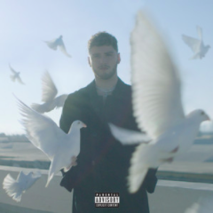
An acronym for ‘I fucking love you,’ “I.F.L.Y.” is the third single released by the American singer/songwriter, Bazzi, for his 2019 mixtape, Soul Searching. The single follows “Paradise” and “Focus” and surrounds Bazzi’s feelings towards his girlfriend and supermodel, Renee Herbert.
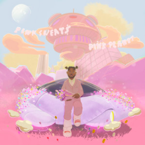
“Honesty” is the first single off of Pink Sweat$‘ debut EP Volume 1. Over a chilled Thrice Cooked Media instrumental, the Philadelphia singer croons about a girl he wants who is afraid of commitment.

Released on Valentine’s Day, Pumpkin is the first single released by The Regrettes in 2019. A love ballad detailing the tumultuous nature of love in its seemingly unbelievable ability to blindside one when falling for another, several references are made to frontwoman Lydia Night’s current boyfriend Dylan Minnette throughout, adding a personal element to the song and the message it carries.
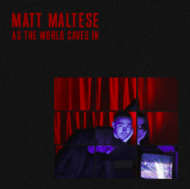
Matt Maltese’s 2017 ballad “As the World Caves In” is a sexy but sinister love song hinging around the idea of a night of passion between Theresa May (the UK Prime Minister at the time) and Donald Trump (the US President at the time).
Many felt that the two governments were a worrying sign that the world was heading towards its demise. Maltese has since tweeted that the song is no longer about Trump/May, however, the song crystallizes this apocalyptic feeling perfectly and the song remains relevant today, as the world continues to cave in.
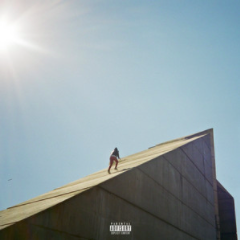
After teasing several pictures on Instagram of a possible collaboration, Daniel Caesar and the mystery artist H.E.R. come together for the second song on this new release.
Caesar and H.E.R. both released this song on their albums, Caesar on Freudian as “Best Part (feat. H.E.R.)” and H.E.R. on H.E.R. as “Best Part (feat. Daniel Caesar).”
The song, which Jacob Collier describes as “an all-time classic,” is a simple, though beautiful love song about the intensity with which the singer values their partner.
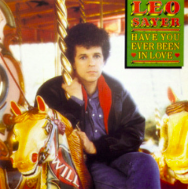
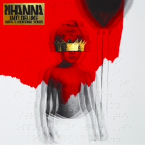
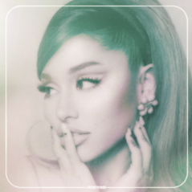
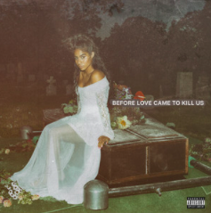
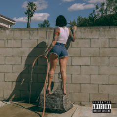
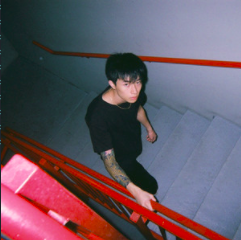
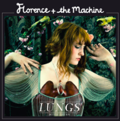